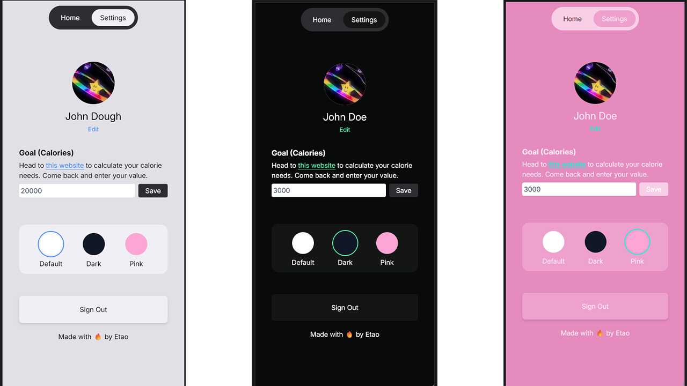
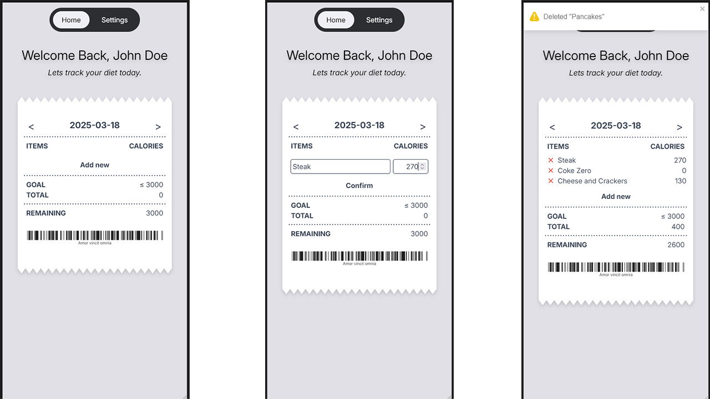
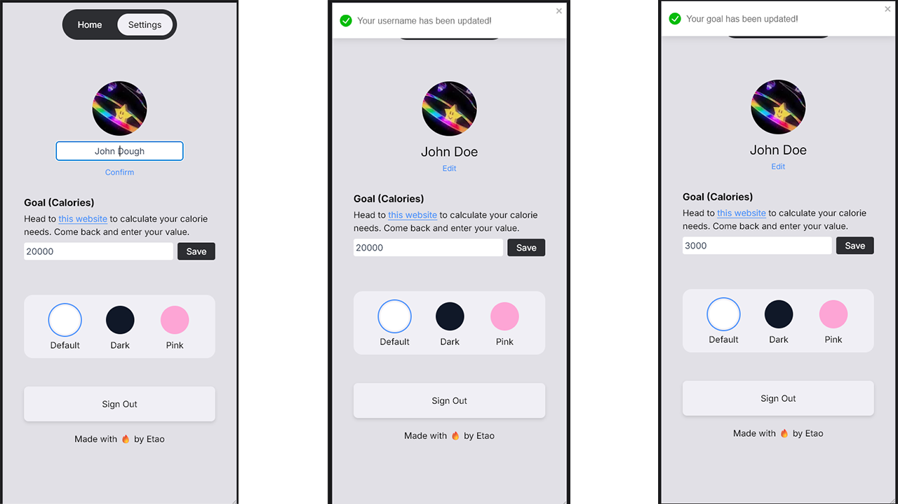

Foodtab - Calorie Tracker without the fluff
Why
Couldn’t find a suitable calorie tracker that does what I need it to. Given an amount, track calorie intake versus this goal.
Most apps ask too much questions, all this application needs to know is what your goal is.
This application was created to really get my hands dirty with react hooks, next.js functionalities, a refresher on user authentication and database.
How
- 🪝 React with Next.js and tailwindcss
- 🔥 Firestore for Authentication and Database
- Typescript
Result
- User Authentication and Database with Firebase
- Beautiful UI
- Theme picker
A minimal calorie tracking app that takes on the aesthetic of a receipt/tab.
No 100 question surveys to get you started.
Just tell it your calorie goal and diligently log your meals.
See some pictures ⬇️
Themes and aesthetic

- The themes are stored as user information on the database to achieve persistent theme preference.
Item manipulation

- UX is intuitive and familiar. Holding down the list will reveal the item removal widgets.
- System status notifications to keep users in the loop
User settings

- All user information is being listened by onSnapshot listeners to allow changes to be reflected immediately
- System status notifications to keep users in the loop